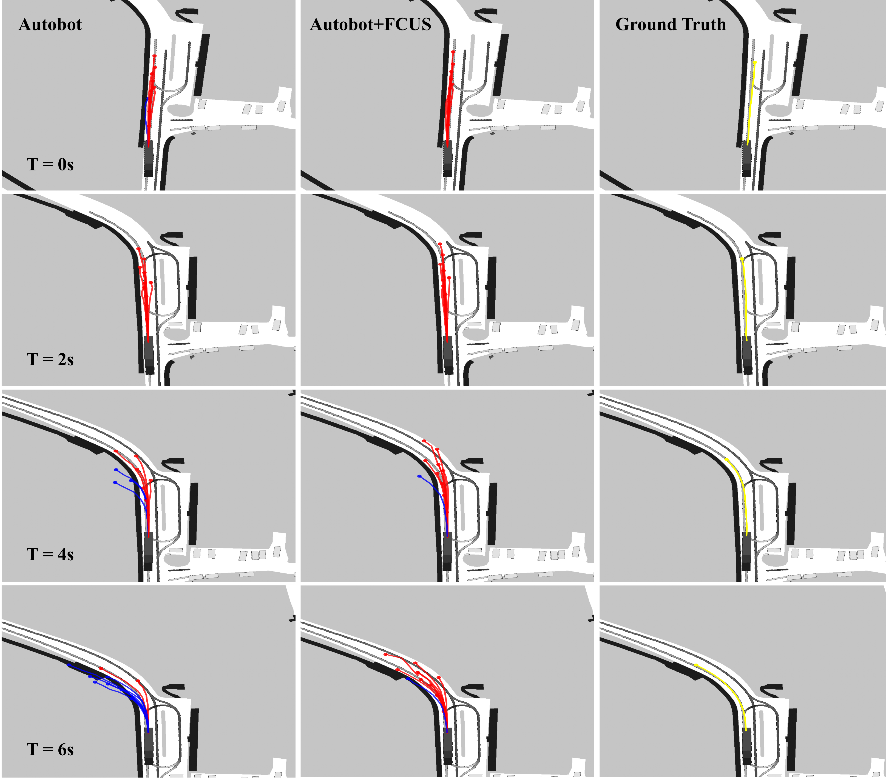

FCUS: Traffic Rule-Aware Vehicle Trajectory Forecasting Using Continuous Unlikelihood and Signal Temporal Logic Feature
- Sheng Wang
- Ren Xin
- Yingbing Chen
- Jie Cheng
- Xiaodong Mei
- Fulong Ma
- Ming Liu
Hong Kong University of Science and Technology, RAM-LAB
Abstract & Method
Abstract— Vehicle trajectory prediction is essential to autonomous driving tasks. Accurate trajectory prediction of other traffic agents can significantly improve the ability of scene understanding and eventually improve the driving safety level of autonomous vehicles. Popular trajectory prediction methods leverage traffic rules by considering maps or lane graphs as a part of the input. However, this implicit representation is insufficient and cannot guarantee an accurate understanding of traffic rules through the model. In this paper, we introduce FCUS, a novel method to incorporate traffic rules in vehicle forecasting by explicitly modeling them into continuous signal temporal logic (STL) features into a GAN-style neural network. The model first takes the input of history trajectories and rasterized or vectorized maps, depending on the generator’s backbone. The predicted trajectories and ground truth are then fed to a rule checker, which assigns each element the rule satisfaction degree as the STL feature. Meanwhile, negative trajectories set are selected from by rule checker for calculating the unlikelihood loss. Subsequently, trajectories with STL features are passed through a Discriminator to output the score of each trajectory.
Qualitative Analysis (Autobot vs. FCUS+Autobot)
A turning scene in NuScenes. Images in the first and second columns demonstrate applying Autobot and Autobot+FCUS, respectively. Predicted trajectories are in red; rule-violated samples are in blue, the yellow curve in the last column representing the ground truth. At first, both Autobot and Autobot+FCUS can produce reasonable predictions. But when the vehicle approaches the corner, Autobot is no longer reliable and generate multiple rule-violated samples.
